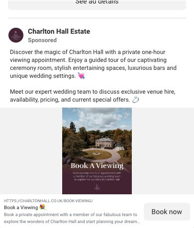

III
How the venues winning nearby do it
Charlton Hall, Doxford Barns and Woodhill Hall, read on 25 September. You are basically in this group already. The gap is the one thing even they miss: TikTok, and a steady reel habit.
Charlton
Doxford
Woodhill
Instagram
17.3K
12.5K
10.7K
Reels in last 12
4
4
3
Ads running
Yes
3, since June
None
One CTA, repeated
Book a Viewing
Book a Tour
Book a Personal Tour
Reasons to visit
Open day 18 Oct, tastings, offers
Open day, tastings, offers
Open dates
Horton Grange
6,438
Ads live, pixel on
No TikTok
Swipe the table sideways

Doxford Barns, Meta Ad Library, 25 September. Three ads live since June: a price, a film, an open day.
Doxford Barns, Chathill
Never out of a couple's feed
Doing wellAlways-on ads with a starting price, a video ad, and the open day promoted as its own ad. Offers and tastings pinned as highlights.
Getting wrongThe copy could be any barn. "Your dream countryside wedding awaits." Nothing that only they can say.
Take from itYou already run ads like Doxford. The edge is keeping them fed: fresh film every month beats the same photos running for a year.

Charlton Hall Estate, ad live since March: a private one-hour viewing, straight to the booking page.
Charlton Hall, Alnwick
Sells the visit, not the venue
Doing wellThe ad asks for one thing: book a viewing. Open day on 18 October already promoted. 17.3K followers and a steady run of reels.
Getting wrongTheir TikTok link goes to an account that does not exist. None of the three has cracked that channel.
Take from itOne door. You already run showrounds and a brochure. The open channel for all of you is TikTok, and you can be first.

Woodhill Hall homepage: opens on film, "Pricing" and "Photo and Film" in the menu, tour button and phone number below.
Woodhill Hall, Otterburn
Best front door in the county
Doing wellFilm first. A pricing page. "Book your personal tour" twice, a mobile number in plain sight, eleven award badges.
Getting wrongNo ads at all, and only three reels in twelve. All that proof waits for people who already found them.
Take from itYou already have a wedding videos page, which is ahead of Woodhill. Turn that instinct into monthly reels, not one film a year.